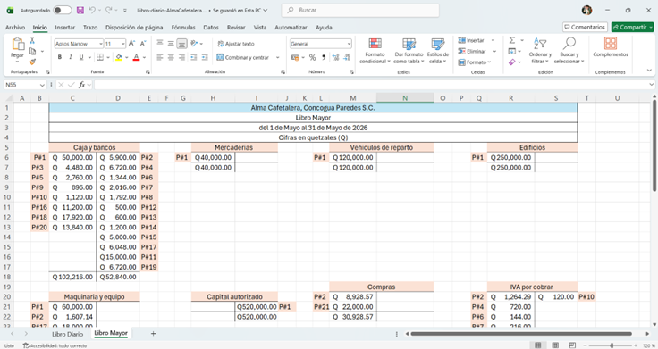
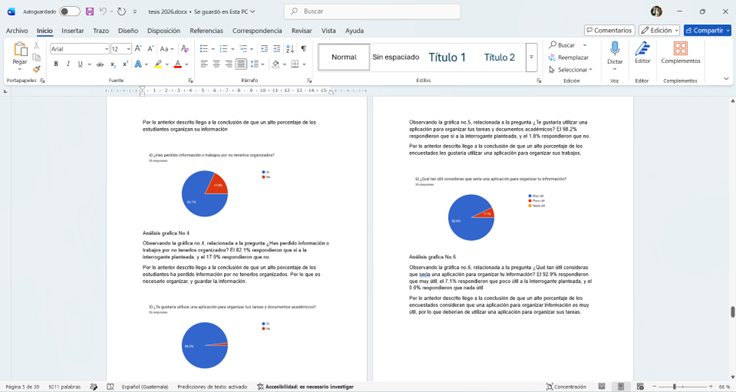
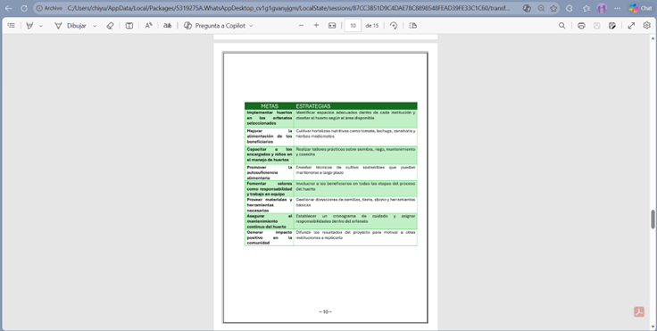
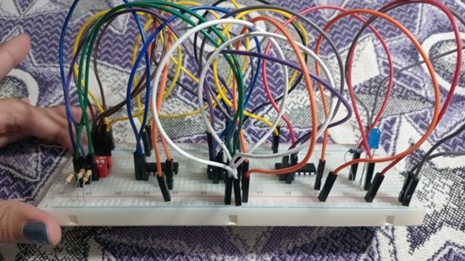
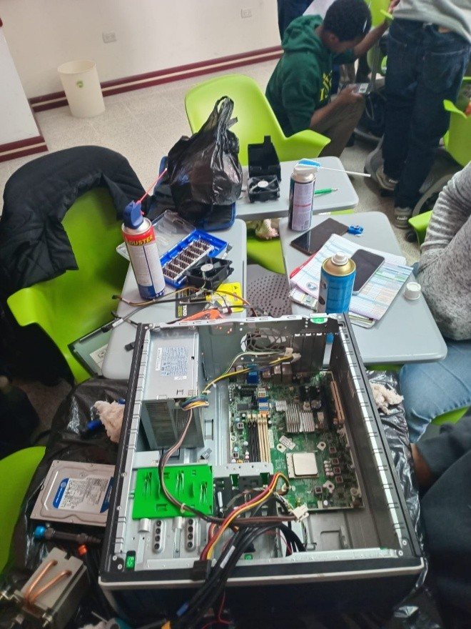
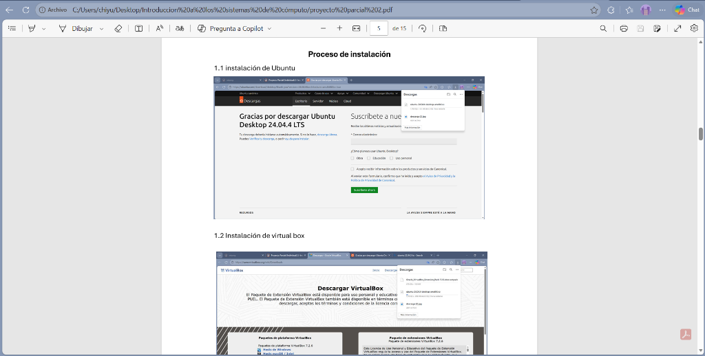
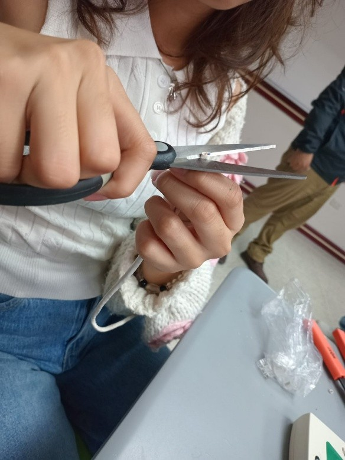
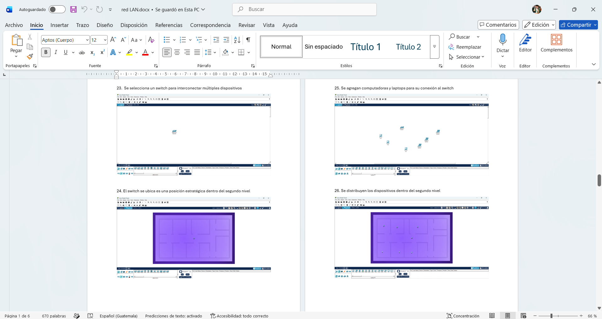
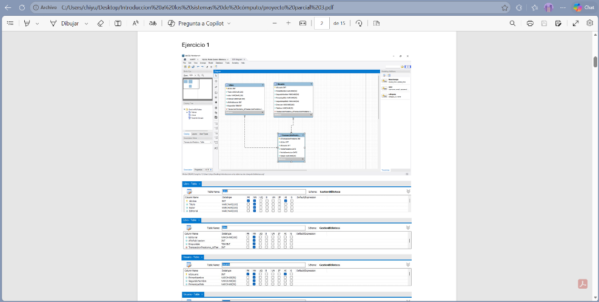

Portafolio Académico
Ingeniería en Sistemas • Evelyn Chiyut
Proyectos Académicos
Estos son los proyectos desarrollados durante el semestre, organizados por curso.

Contabilidad I
Creación de una empresa ficticia
Proyecto grupal basado en la creación de una empresa ficticia y el desarrollo de su proceso contable. Se trabajaron partidas contables, libro diario, libro mayor y estados financieros.
Herramientas: Excel, calculadora y cuaderno de contabilidad.
Aprendizaje: organización de cuentas, libro mayor y análisis financiero.

Metodología de la Investigación
Investigación tipo tesis
Proyecto enfocado en una investigación sobre un sistema de software para la organización y control de información. Se elaboraron marcos, encuestas, entrevistas y exposición académica.
Herramientas: Word, Canva, internet, encuestas y entrevistas.
Aprendizaje: redacción formal, investigación y exposición.

Desarrollo Humano
Semillas de Vida
Proyecto ficticio enfocado en apoyar orfanatos mediante la implementación de huertos agrícolas. Se trabajaron valores como solidaridad, responsabilidad, empatía y trabajo en equipo.
Herramientas: Word, Canva, internet e imágenes.
Aprendizaje: organización, creatividad y apoyo comunitario.

Lógica de Sistemas
Circuitos lógicos con LEDs
Proyecto basado en el uso de compuertas lógicas AND, OR y NOT para encender luces LED mediante interruptores. Se aplicaron tablas de verdad y análisis lógico.
Herramientas: protoboard, LEDs, cables, interruptores y simuladores.
Aprendizaje: razonamiento lógico y análisis de circuitos.
Introducción a los Sistemas de Cómputo

Mantenimiento de computadora
Proyecto grupal donde se realizó mantenimiento preventivo a una computadora, identificando componentes internos y aplicando procesos básicos de limpieza y cuidado del equipo.
Herramientas: destornilladores, computadora y material de limpieza.
Aprendizaje: reconocimiento de hardware y mantenimiento preventivo.

Instalación de Ubuntu
Proyecto individual donde se instaló Ubuntu en una máquina virtual usando VirtualBox. También se practicaron comandos básicos en la terminal de Linux.
Herramientas: VirtualBox, Ubuntu y terminal de Linux.
Aprendizaje: instalación de sistemas operativos y uso básico de Linux.

Fabricación de patchcords
Laboratorio práctico donde se fabricaron cables de red directos y cruzados, utilizando normas T568A y T568B. También se comprobó su funcionamiento con tester.
Herramientas: cable UTP, conectores RJ45, ponchadora y tester.
Aprendizaje: cableado estructurado y redes básicas.

Red LAN en Packet Tracer
Proyecto donde se diseñó una red LAN para una casa de tres niveles, configurando router, switch, repetidor y dispositivos inalámbricos.
Herramientas: Cisco Packet Tracer, router, switch y dispositivos de red.
Aprendizaje: configuración de redes y comunicación entre dispositivos.

Bases de datos
Proyecto donde se realizaron diagramas entidad-relación, generación de scripts, creación de bases de datos y tablas usando Workbench y phpMyAdmin.
Herramientas: MySQL Workbench, phpMyAdmin y XAMPP.
Aprendizaje: análisis de datos, tablas y relaciones.

Portafolio digital académico
Proyecto enfocado en organizar todos los trabajos realizados durante el semestre dentro de un portafolio digital, mostrando proyectos, competencias y evidencias.
Herramientas: HTML, CSS, Word, Canva e internet.
Aprendizaje: organización, diseño web y presentación académica.